Bucharest University of Economic Studies, Department of Statistics and Econometrics Romanian Academy, Institute for Economic Forecasting
The price of electricity is set again every day, for every hour, on the day-ahead market. A supplier, a producer or a large consumer that buys or sells on this market does not only care about the expected price: it cares about how far tomorrow's price can land from what it expects today. That distance is the volatility of the price, and it decides the size of trading limits, the collateral paid to an exchange, the margin a supplier must add to a fixed-price contract and the value of a battery. This lecture measures volatility on real data from the Romanian day-ahead market, Piața pentru Ziua Următoare (PZU), run by the Romanian electricity and gas market operator (OPCOM), from 1 January 2019 to 31 October 2026, and compares it with crude oil, carbon allowances, gas and Romanian energy shares.
Power behaves unlike a financial asset. Electricity cannot be stored, so the power delivered on day \(t\) and on day \(t-1\) are different products, and the price can approach zero or even turn negative. Daily changes are very large: their standard deviation is 28.3% per day, and power prices are about 9 times more volatile than oil. Volatility also comes in clusters: a large shock today announces large shocks in the next days. These two facts, together with a strong weekly calendar, shape every tool of the lecture.
The lecture first fixes how to measure volatility, in percent or in euro per megawatt-hour, after removing the weekly calendar. It then models volatility with generalised autoregressive conditional heteroskedasticity (GARCH) models, separates calm and turbulent regimes, measures risk within the day from hourly prices and compares volatility forecasts out of sample. It closes with a case study of the year 2026 and gives the answer promised in Lecture 1: how long a risk desk should keep wider limits after a shock.
What you will be able to do
Measure volatility correctly, as percent or EUR/MWh changes of the day-ahead price after removing the weekly calendar, and decide what to do when prices approach zero or turn negative.
Model volatility with GARCH models with Student-t shocks, and read their persistence, the half-life of a shock and the asymmetry between price rises and falls.
Recognise calm and turbulent regimes, the 2021–2022 energy crisis and the year 2026, and the intraday risk created by solar generation.
Forecast and evaluate volatility one day and several weeks ahead, comparing forecasts with a robust loss function and a significance test.
Decide how long a risk desk should keep wider limits after a shock, the question left open in Lecture 1.
Lecture plan
Measuring volatilityBefore any model, two choices decide what "volatility" means for electricity: the unit in which a price change is measured, percent or euro per megawatt-hour, and what is removed from the change because it is known in advance, the weekly calendar.
The GARCH familyVolatility clustering means that tomorrow's variance can be forecast from today's data.
Regimes and the energy crisisGARCH lets volatility drift smoothly; the energy crisis looked more like a switch to a different state.
Case study: Romanian power in 2026The case study applies the tools of the lecture to the question every Romanian energy company asked in autumn 2026: is the rise in prices a new crisis like 2022?
Wrap-upThe wrap-up checks the main ideas with five short questions, summarises the lecture and points to the research of our group and to further reading.
AppendixThe appendix gives the technical details behind the main text: the Student-t likelihood of GARCH, the derivation of the multi-step forecast and of the half-life, the full table of the six models, the Hamilton filter and the reason for using QLIKE.
Measuring volatility
Before any model, two choices decide what "volatility" means for electricity: the unit in which a price change is measured, percent or euro per megawatt-hour, and what is removed from the change because it is known in advance, the weekly calendar. This section makes both choices on the Romanian data and documents the stylised facts that the models of the next sections must reproduce: volatility clustering, fat tails and a volatility in money that grows with the price level.
Real data: Romanian power, fuels, carbon and energy shares
The lecture uses only real, downloaded data. The main series is the day-ahead price of Romania (RO) on the PZU, with Hungary (HU) and the Germany–Luxembourg bidding zone (DE-LU) for comparison. The prices come from OPCOM, the Hungarian Power Exchange (HUPX) and EPEX SPOT, and are taken from the European Network of Transmission System Operators for Electricity (ENTSO-E) through energy-charts.info, the data portal of the Fraunhofer Institute for Solar Energy Systems (ISE). Power data are both daily and hourly and cover 1 January 2019 to 31 October 2026, the last complete month: 2,861 delivery days in Central European Time (CET), none missing, downloaded on 4 November 2026.
For comparison with other energy assets the lecture adds daily solar generation in Romania (ENTSO-E, Transelectrica data); the nearest Brent crude oil futures contract in United States dollars (USD) per barrel, from Yahoo Finance; the European Union (EU) emission allowance (EUA), tracked through an exchange-traded commodity (ETC) backed by allowances; the monthly gas price at the Dutch Title Transfer Facility (TTF) from the World Bank Pink Sheet, since no free daily series exists; and two shares listed on the Bucharest Stock Exchange (BVB), OMV Petrom (SNP) and Hidroelectrica (H2O), dividend-adjusted, from the data vendor eodhd.com (EODHD).
Two cleaning steps matter. For Brent, the first trading day of each month is dropped, 95 days in all, because the change of the nearest contract is not a price move. The EUA series starts on 19 October 2021.
Volatility is the typical size of tomorrow's price surprise
Volatility tells how far from today's price tomorrow's price usually lands. For electricity, the daily price \(P_t\) is the base price of day \(t\), the mean of the day's hourly prices in euro (EUR) per megawatt-hour (MWh). A price change can be measured in percent or in euro:
where \(r_t\) is the change in percent (a log change, multiplied by 100) and \(\Delta P_t\) the change in EUR/MWh. The volatility of a sample of \(T\) days is the standard deviation of the changes, annualised with the square root of the number of observations per year:
where \(\bar r\) is the mean change over the \(T\) days, \(\hat\sigma\) the daily volatility, \(\sigma_{\text{year}}\) the annualised one and \(A\) the number of observations per year: 365 for power, which has an auction every day, and 252 for traded assets.
On the Romanian data for 2019–2026, the standard deviation of \(r_t\) is 28.3% per day and that of \(\Delta P_t\) is 30.9 EUR/MWh. Annualised, after the weekly calendar is removed, this is 382%, against 42% for Brent and 38% for the EUA. The comparison must be read with care: a power price change is not an asset return, because electricity cannot be stored and the products of days \(t\) and \(t-1\) are different. Nobody can buy today's power and sell it tomorrow.
In practice: A supplier that buys on the PZU every day is exposed exactly to this daily surprise.
Daily price changes alternate calm and turbulent stretches
The chart shows the Romanian base price and its daily percent change over the whole sample. Two features stand out. First, the size of the changes is not constant: quiet months, when the price moves by a few percent a day, alternate with turbulent stretches in which moves of 50% or more follow one another. Second, the turbulent stretches do not coincide only with the energy crisis, when the price level was highest; some of the largest percent moves occur after it, in 2023 and 2024.
The extreme days are holidays and calendar breaks. The largest rise, +194%, happened on 2 January 2023, right after the New Year holiday; the largest fall, −227%, on 25 December 2023, Christmas Day, when demand collapsed. In all, 189 of the 2,860 daily changes exceed 50% in absolute value. Such numbers would be unthinkable for a share or a currency and show why power needs its own risk tools.
In practice: A calm month says little about next month: risk comes in clusters.
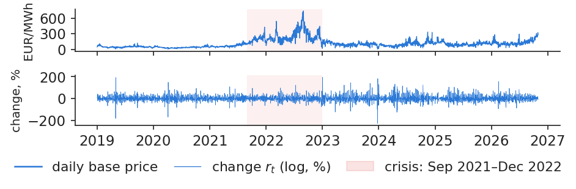
Top: daily base price of Romania in EUR/MWh; bottom: daily log change \(r_t\) in percent; the shaded band marks the energy crisis, September 2021 to December 2022.
Source: energy-charts.info (Fraunhofer ISE); OPCOM day-ahead prices for Romania, via ENTSO-E. Data: daily, 2019-01-01 to 2026-10-31, CET delivery days.
The logarithm in (3.1) needs positive prices, and near zero ordinary moves become huge percentages. A common alternative in the electricity literature is the inverse hyperbolic sine:
where \(\asinh\) is the inverse hyperbolic sine, defined for prices of any sign, and \(\Delta\) the change from day \(t-1\) to day \(t\). Far from zero the two transformations agree: from 100 to 120 EUR/MWh both give 18.2%. Near zero both explode, so the transformation does not solve the problem of percent changes; it only allows negative prices (Uniejewski, Weron & Ziel, 2018).
On our data the Romanian base price was always positive, with a minimum of 3.97 EUR/MWh, but there were 485 hours with negative prices, spread over 117 days. In the DE-LU zone the daily base price was zero or negative on 20 days, and one move from 0.95 to 92.91 EUR/MWh produced \(r_t\) = 458%, a number with no economic meaning. The lecture therefore uses \(r_t\) in percent and \(\Delta P_t\) in EUR/MWh for the daily base price, and EUR/MWh only for hourly prices.
In practice: A position is in MWh, so its risk is in EUR/MWh. Use percent only far from zero.
Half of the daily change is the weekly calendar, known in advance
A large part of the daily change is not a surprise at all. Demand is lower at weekends, so the price falls on Saturday and Sunday and jumps back on Monday. Before measuring volatility, this predictable part is removed with a mean equation:
where \(c\) is a constant, \(\phi_k\) the weight of the change \(k\) days ago, \(D_{j,t}\) a dummy equal to 1 if day \(t\) is weekday \(j\) (and 0 otherwise), \(\delta_j\) its effect and \(\varepsilon_t\) the shock, the part of the change that could not be foreseen. The same equation is estimated on \(\Delta P_t\), and its shock in EUR/MWh is written \(u_t\).
The left panel of the chart shows the mean change by weekday: about +38% on Monday, and about −18% and −19% on Saturday and Sunday. The equation explains half of the daily variance (\(R^2\) = 0.50), and the standard deviation drops from 28.3% before to 20.0% after. All volatility models below are fitted to \(\varepsilon_t\) and, in EUR/MWh, to \(u_t\), never to the raw change.
In practice: A Monday price jump is not a risk signal: forecast it, do not hedge it.
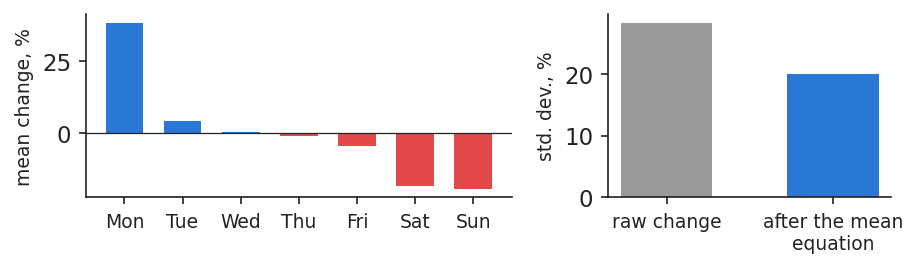
Left: mean daily percent change of the Romanian base price by day of the week; right: standard deviation of the raw change and of the shock left after the mean equation.
Source: energy-charts.info (Fraunhofer ISE); OPCOM day-ahead prices for Romania, via ENTSO-E. Data: daily, 2019-01-01 to 2026-10-31.
Once the calendar is removed, the shocks \(\varepsilon_t\) behave like a fair coin in their sign but not in their size. The chart shows the autocorrelation of the shocks (left) and of the squared shocks (right) for lags up to a month. The first are almost all inside the band expected without autocorrelation; the second are positive and clearly outside it for many lags. Two tests confirm the picture. The Ljung–Box statistic,
where \(\hat\rho_k\) is the sample autocorrelation at lag \(k\) and \(T\) the number of days, is 13.8 for \(\varepsilon_t\) (\(p\) = 0.18, no autocorrelation) and 120.0 for \(\varepsilon_t^2\), far above the 5% critical value of 18.31. The Lagrange multiplier test for autoregressive conditional heteroskedasticity (ARCH-LM) with 10 lags gives 93.7, with \(p<0.001\) (Engle, 1982).
This is volatility clustering, the central stylised fact of the lecture: the direction of tomorrow's move cannot be predicted from today, but its size can.
In practice: A large shock today announces large shocks in the next days: this is the subject of the lecture.
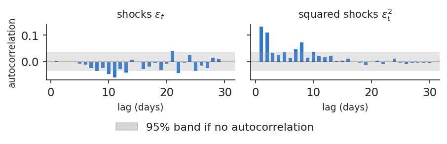
Autocorrelation of the shocks \(\varepsilon_t\) (left) and of the squared shocks \(\varepsilon_t^2\) (right) for lags of 1 to 30 days, with the 95% band expected under no autocorrelation.
Source: energy-charts.info (Fraunhofer ISE); OPCOM day-ahead prices for Romania, via ENTSO-E. Data: residuals of the mean equation, 2019-01-01 to 2026-10-31.
The second stylised fact is fat tails. The shocks \(\varepsilon_t\) have an excess kurtosis of 20.0, while the normal law has zero, and a skewness of −1.69: the largest moves are falls, on holidays and windy days when demand is low or wind output high. There are 15 shocks beyond 4 standard deviations, against 0.18 expected under normality.
The chart plots, on a logarithmic scale, the density of the shocks standardised by a GARCH model, the normal density and a Student-t density with \(\nu\) = 4.3 degrees of freedom. The normal curve falls far too quickly in the tails; the Student-t curve follows the data much better. This is why every model of the next section uses Student-t shocks (Bollerslev, 1987).
In practice: A limit built on the normal curve is breached far more often than planned (Lecture 4).
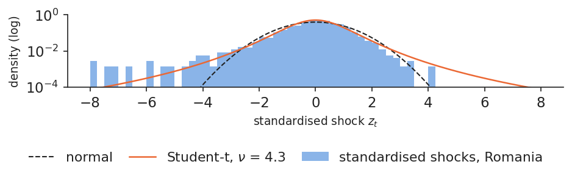
Density of the GARCH-standardised shocks \(z_t\) of the Romanian price (bars, logarithmic scale), with the normal density (dashed) and the Student-t density with \(\nu\) = 4.3.
Source: energy-charts.info (OPCOM, via ENTSO-E); own estimates. Data: GARCH(1,1)-t on percent changes, 2019-01-01 to 2026-10-31.
The choice of unit is not a technical detail. The chart shows, year by year, the standard deviation of the shocks in percent and in EUR/MWh. In percent, 2022, the year of the energy crisis, was no more volatile than 2019: 18.5% against 18.7%, a ratio of 0.99. In EUR/MWh the same years give 11.2 against 45.8, a ratio of 4.1, because the mean price rose from 50 to 265 EUR/MWh.
Both statements are correct; they answer different questions. Percent volatility describes the relative size of moves, while volatility in EUR/MWh describes the money a position of one megawatt-hour gains or loses. During the crisis the relative size of moves did not change, but each move cost about four times more.
In practice: Margin calls are paid in EUR: collateral rose with the price level although percent volatility did not.
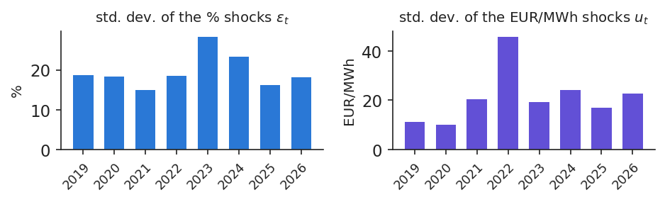
Standard deviation of the daily shocks of the Romanian price by year, 2019–2026: in percent, \(\varepsilon_t\) (left), and in EUR/MWh, \(u_t\) (right).
Source: energy-charts.info (Fraunhofer ISE); OPCOM day-ahead prices for Romania, via ENTSO-E. Data: residuals of the mean equation, 2019-01-01 to 2026-10-31.
The table compares the annualised volatility of the daily shocks of each series, year by year (in percent):
Annualised volatility, %
2019
2020
2021
2022
2023
2024
2025
2026
Power, Romania
358
349
287
354
543
444
310
346
Power, Hungary
247
329
289
335
566
547
358
339
EUA
–
–
–
53
32
37
24
28
Brent
30
71
32
46
31
25
29
56
TTF gas (monthly)
42
82
58
100
78
38
28
63
OMV Petrom (SNP)
24
35
22
22
18
17
20
21
Hidroelectrica (H2O)
–
–
–
–
13
14
14
30
For power the daily standard deviation is multiplied by \(\sqrt{365}\), for traded assets by \(\sqrt{252}\); TTF is available only as monthly averages, scaled by \(\sqrt{12}\), which understates its risk. A dash means that the series was not yet available. Power in Romania and Hungary is several hundred percent a year, every year; over the whole sample, 382% against 42% for Brent, about 9 times more. Brent peaks in 2020 and in 2026, carbon in 2022. The two Romanian shares are much calmer than the commodities their companies sell, although Hidroelectrica doubled its volatility in 2026.
In practice: Never compare the limits of a power desk with those of an oil desk in the same percent.
Section summary
Volatility is the standard deviation of the daily price shock, after the weekly calendar is removed, measured in percent or in EUR/MWh. For Romanian power it is an order of magnitude larger than for oil or carbon, it comes in clusters, its tails are fat, and in money it follows the price level.
The GARCH family
Volatility clustering means that tomorrow's variance can be forecast from today's data. This section introduces the GARCH model, estimates it by maximum likelihood with Student-t shocks, measures how long a volatility shock lasts and adds two asymmetric extensions in which rises and falls of the price have different effects.
GARCH updates tomorrow's variance from today's shock
A big shock yesterday raises today's variance; the effect then fades day by day. The GARCH(1,1) model (Engle, 1982; Bollerslev, 1986) writes this as a recursion:
where \(\sigma_t^2\) is the conditional variance of day \(t\), known on the evening of \(t-1\); \(\omega>0\) is a constant; \(\alpha\ge0\) measures the reaction to yesterday's shock \(\varepsilon_{t-1}\); \(\beta\ge0\) is the memory of yesterday's variance; and \(z_t\) is the standardised shock, with mean 0 and variance 1. The sum \(\alpha+\beta\) is the persistence; when it is below 1 the variance returns to the long-run level
\[\bar\sigma^2=\frac{\omega}{1-\alpha-\beta}.\]
(3.7)
With \(\beta=0\) the model reduces to the original autoregressive conditional heteroskedasticity (ARCH) model of Engle (1982).
On the Romanian shocks in percent the estimates are \(\hat\alpha\) = 0.308 and \(\hat\beta\) = 0.438, so \(\hat\alpha+\hat\beta\) = 0.746 and the long-run volatility is \(\bar\sigma\) = 20.4% per day. On the shocks in EUR/MWh they are \(\hat\alpha\) = 0.102 and \(\hat\beta\) = 0.892, so \(\hat\alpha+\hat\beta\) = 0.994 and \(\bar\sigma\) = 27.6 EUR/MWh per day. The two units give very different dynamics: in percent volatility reacts strongly and forgets quickly; in EUR/MWh it reacts less and remembers for a long time.
In practice: Every evening GARCH gives the risk desk tomorrow's \(\sigma\), from data it already has.
Parameters are estimated by maximum likelihood with Student-t shocks
where \(f_\nu\) is the Student-t density rescaled to variance 1, with \(\nu>2\) degrees of freedom, and \(\sigma_t\) follows (3.6). A small \(\nu\) means fat tails; as \(\nu\to\infty\) the density becomes normal. Models are compared with the Bayesian information criterion (BIC), \(\text{BIC}=k\ln T-2\hat\ell\), where \(k\) is the number of parameters and \(\hat\ell\) the maximised log-likelihood; a lower BIC is better. The full formula is in Appendix A.
GARCH(1,1), shocks in %
normal
Student
log-likelihood
−12,360.3
−12,094.5
BIC
24,744.5
24,220.8
\(\hat\alpha+\hat\beta\)
0.927
0.746
half-life, days
9.2
2.4
\(\hat\nu\)
–
4.27
The Student model wins clearly, with a much lower BIC. The difference is not only statistical. The normal model treats every holiday as the start of a lasting turbulent period, so it estimates a high persistence (0.927) and a shock half-life of 9.2 days. The Student model accepts that some days are simply extreme, and its persistence is 0.746, with a half-life of 2.4 days.
In practice: Use Student-t shocks: with normal shocks the limits stay wide for too long.
GARCH volatility: short spikes in percent, a long hump in EUR/MWh
The chart shows the daily conditional volatility \(\hat\sigma_t\) of the two GARCH(1,1)-t models over the whole sample. In percent, volatility consists of short spikes on top of a fairly stable floor; the highest, 156% per day, came on 26 December 2023, right after the Christmas fall, and was gone within days. In EUR/MWh the picture is a long hump: volatility rose through 2021, peaked at 85.7 EUR/MWh on 4 September 2022, at the height of the crisis, and came down slowly through 2023. The minimum, 8.8 EUR/MWh, was on 6 July 2019, and at the cut-off of the data the value was 27.4.
The two lines tell different stories because they measure different things. The percent line answers "how large is tomorrow's move relative to the price?", the EUR/MWh line "how many euro per megawatt-hour can tomorrow's move cost?".
In practice: A supplier's collateral follows the EUR/MWh line, not the percent line.
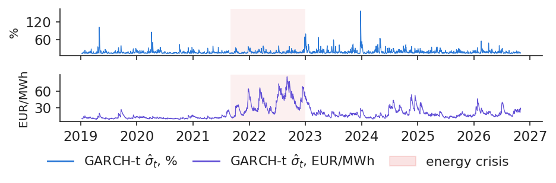
Daily GARCH(1,1)-t conditional volatility of the Romanian price: on percent changes (top) and on EUR/MWh changes (bottom), with the energy crisis shaded.
Source: energy-charts.info (OPCOM, via ENTSO-E); own estimates. Data: GARCH(1,1)-t, 2019-01-01 to 2026-10-31.
where \(\E_t\) is the expectation given the data up to day \(t\) and \(h\) the number of days ahead. The half-life \(h_{1/2}\) is the number of days after which half of the extra variance is gone:
\[h_{1/2}=\frac{\ln 0.5}{\ln(\alpha+\beta)}.\]
(3.10)
The derivation is in Appendix B. The table gives persistence and half-life for each series, all from GARCH(1,1)-t:
GARCH(1,1)-t
\(\hat\alpha+\hat\beta\)
\(h_{1/2}\)
unit
Romania, %
0.746
2.4
days
Romania, EUR/MWh
0.994
113.5
days
Hungary, %
0.881
5.5
days
Brent
0.973
25.6
trading days
EUA
0.992
82.8
trading days
OMV Petrom
0.934
10.2
trading days
Power and Brent are estimated from 2019, the EUA from 19 October 2021 and OMV Petrom from 2019. The half-life is very sensitive to persistence near 1: going from 0.973 to 0.992 more than triples it.
In practice: After an oil shock keep wider limits for about 5 weeks; after a percent shock in power, for days.
Answer to Lecture 1: oil and carbon shocks fade in weeks, not days
Lecture 1 asked how long a risk desk should keep wider limits after a shock. The chart answers it by plotting \(100(\hat\alpha+\hat\beta)^h\), the percent of the extra variance left \(h\) days after a shock, for each series; the half-lives are given in brackets in the legend.
For Brent the half-life is 26 trading days, about 5 weeks; for the EUA 83 trading days, about 17 weeks. Shares of OMV Petrom sit in between, at about 10 trading days. For Romanian power the answer depends on the unit: a percent shock halves in 2.4 days, but a shock in EUR/MWh needs 114 days, because volatility in money follows the price level, and the price level itself moves slowly. Part of this long memory comes from mixing calm and crisis years in one sample, as the next section shows.
In practice: After a shock, a risk desk keeps wider limits for weeks, not days, as announced in Lecture 1.
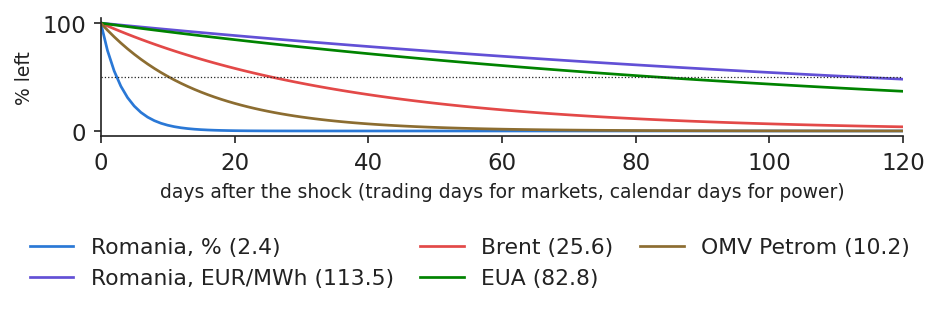
Percent of the extra variance left \(h\) days after a shock, \(100(\hat\alpha+\hat\beta)^h\), for Romanian power in percent and in EUR/MWh, Brent, the EUA and OMV Petrom (SNP); half-lives in brackets; dotted line at 50%.
Source: energy-charts.info (OPCOM, via ENTSO-E); Yahoo Finance (Brent BZ=F, SparkChange EUA ETC); EODHD (BVB shares). Data: GARCH(1,1)-t, each series over its own sample (table on the slide).
In (3.6) a rise and a fall of the same size have the same effect on tomorrow's variance. Two extensions relax this. The Glosten–Jagannathan–Runkle (GJR) model adds a term for negative shocks:
where \(I_{t-1}=1\) if \(\varepsilon_{t-1}<0\) and 0 otherwise. With \(\gamma>0\) falls raise volatility more, the leverage effect known from shares; with \(\gamma<0\) rises do. The exponential GARCH (EGARCH) model of Nelson (1991) works on the logarithm of the variance:
where \(z_{t-1}\) is yesterday's standardised shock and \(\sqrt{2/\pi}\) the mean of \(|z|\) under normality. Here the sign convention is the opposite: \(\gamma<0\) means that falls raise volatility more.
On the Romanian shocks in percent, GJR gives \(\hat\gamma\) = 0.225 (\(t\) = 2.9) and EGARCH \(\hat\gamma\) = −0.083 (\(t\) = −3.9): falls raise volatility more, a rebound effect after a drop. In EUR/MWh the sign flips: GJR gives \(\hat\gamma\) = −0.127 (\(t\) = −6.4) and EGARCH \(\hat\gamma\) = 0.104 (\(t\) = 7.2), so rises raise volatility more. This is the inverse leverage effect typical of commodities (Knittel & Roberts, 2005).
In practice: For a buyer the dangerous direction is up: after a price jump, widen the limits more than after a fall.
In EUR/MWh, rises raise volatility more: the inverse leverage effect
The news impact curve (Engle & Ng, 1993) shows the next-day \(\sigma\) implied by the GJR model as a function of today's shock, holding everything else at its long-run value. The chart draws it separately for falls and rises, in percent and in EUR/MWh.
For a shock of 61 EUR/MWh, about two long-run standard deviations, the next-day \(\sigma\) is 37.6 EUR/MWh after a rise and 30.6 after a fall. In percent the order is reversed: for a shock of 40%, \(\sigma\) is 30.3% after a fall and 23.7% after a rise. The two results are consistent. A rise in EUR/MWh lifts the price level, and at a higher level the same percent move costs more euro; a fall in percent is often a holiday dip, followed by a rebound of similar size.
In practice: An industrial consumer on spot prices should react faster to rises than to falls.
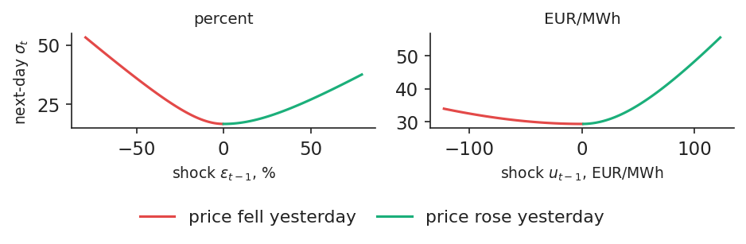
News impact curves of the GJR(1,1)-t model: next-day \(\sigma_t\) as a function of yesterday's shock, in percent (left) and in EUR/MWh (right), separately after a fall and after a rise.
Source: energy-charts.info (OPCOM, via ENTSO-E); own estimates. Data: GJR(1,1)-t, 2019-01-01 to 2026-10-31.
Why does volatility in money follow the price? At high prices the supply curve, the merit order of power plants, is steeper, so the same demand shock moves the price more. The chart plots, for each month, the standard deviation of the EUR/MWh shocks against the mean price, both on logarithmic scales, coloured by year.
A regression of \(\ln\hat\sigma_m(u)\) on \(\ln\bar P_m\), where \(\hat\sigma_m(u)\) is the standard deviation of the shocks \(u_t\) in month \(m\) and \(\bar P_m\) the mean price of that month, over 94 months, gives a slope of 0.75 with \(R^2\) = 0.76: since both sides are in logs, the slope is an elasticity, so volatility in EUR/MWh rises almost in proportion to the price. The same regression for percent shocks has a slope of 0.01 and \(R^2\) = 0.00. Percent volatility does not depend on the price level; EUR/MWh volatility almost scales with it.
In practice: Set EUR/MWh limits as a share of the forward price, not as a fixed amount.
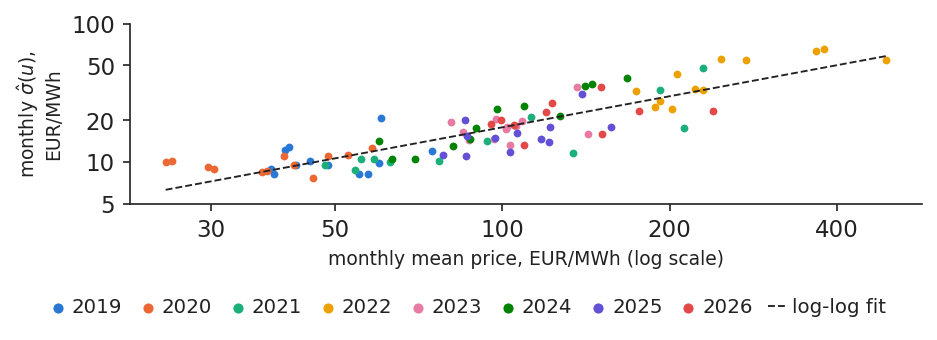
Monthly standard deviation of the EUR/MWh shocks against the monthly mean price, both on log scales, coloured by year, with the fitted log-log line.
Source: energy-charts.info (Fraunhofer ISE); OPCOM day-ahead prices for Romania, via ENTSO-E. Data: monthly, 2019-01-01 to 2026-10-31.
The table puts the six models side by side: three variance equations (GARCH, GJR, EGARCH), each with normal and Student-t shocks, in both units. It gives the persistence, the BIC and the Ljung–Box \(p\)-value for the squared standardised shocks \(z_t^2\).
Model
\(\alpha+\beta\) (%)
BIC (%)
\(p\), \(z^2\) (%)
\(\alpha+\beta\) (EUR)
BIC (EUR)
\(p\), \(z^2\) (EUR)
GARCH, normal
0.927
24,744.5
0.328
0.998
24,573.2
0.000
GARCH, Student
0.746
24,220.8
0.367
0.994
24,450.7
0.000
GJR, normal
0.651
24,690.7
0.151
0.998
24,525.1
0.000
GJR, Student
0.727
24,214.1
0.243
0.996
24,411.7
0.000
EGARCH, normal
0.903
24,691.4
0.529
0.995
24,518.0
0.000
EGARCH, Student
0.831
24,219.2
0.532
0.995
24,403.9
0.000
Every Student-t model beats every normal one. The best by BIC is GJR-t in percent and EGARCH-t in EUR/MWh, but the gain from asymmetry is small compared with the gain from fat tails; the Akaike information criterion (AIC) gives the same ranking (Appendix C). The diagnostic column shows a difference between units: in percent no clustering is left in \(z_t^2\), while in EUR/MWh some is (\(p<0.001\)). A single equation cannot follow both the slow movement of the price level and the daily shocks.
In practice: First get the tails right, then worry about asymmetry.
Section summary
GARCH forecasts tomorrow's variance from today's shock and yesterday's variance. With Student-t shocks, a percent shock in Romanian power halves in about two days, an oil shock in about 5 weeks, and in EUR/MWh rises raise volatility more than falls.
Regimes and the energy crisis
GARCH lets volatility drift smoothly; the energy crisis looked more like a switch to a different state. This section fits a two-regime Markov-switching model, dates the turbulent periods from 2019 to 2026 and shows how the persistence of GARCH depends on the period and the unit.
A Markov-switching model separates calm and turbulent regimes
where \(u_t\) is the shock in EUR/MWh, \(s_t\) the regime of day \(t\) (calm or turbulent), \(\mu_{s_t}\) and \(\sigma_{s_t}\) the mean and standard deviation in that regime, \(\eta_t\) a standard normal variable and \(p_{ij}\) the probability of moving from regime \(i\) to regime \(j\). The parameters are estimated by maximum likelihood with the Hamilton (1989) filter (Appendix D). The expected length of a stay in regime \(i\) is
\[\text{expected duration of regime } i=\frac{1}{1-p_{ii}}.\]
(3.14)
For every day the model gives the probability of the turbulent regime. On the Romanian EUR/MWh shocks the calm regime has \(\sigma\) = 12.9 and \(p_{11}\) = 0.986, so it lasts about 69 days on average; the turbulent regime has \(\sigma\) = 41.9 and \(p_{22}\) = 0.957, about 23 days, and covers 24% of all days. Fitted to the percent shocks, the turbulent state lasts only 3.5 days: in percent it captures isolated spikes, not long periods.
In practice: A turbulent-regime probability above 0.5 triggers a review of hedges and collateral.
The crisis was one long turbulent regime; 2026 moves in and out
The chart puts the daily base price above the smoothed probability of the turbulent regime. The energy crisis appears as one long block: the longest turbulent spell ran from 15 June 2022 to 31 January 2023, 231 days. Before it, the calm regime dominated almost completely, and after it the model moves in and out of turbulence for shorter spells.
The share of turbulent days by year summarises the history: 86% in 2022, 6% in 2025 and 33% in 2026, rising to 48% since July 2026. The year 2026 is therefore not a quiet year, but it is not a repeat of 2022 either: the turbulent spells are short and alternate with calm ones.
In practice: Transelectrica and suppliers can use the regime probability as an early warning for balancing costs.
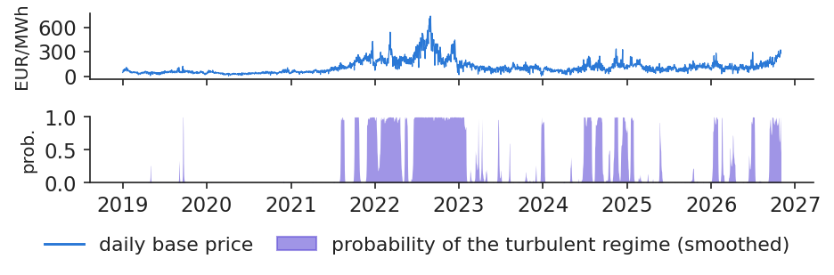
Top: daily base price of Romania in EUR/MWh; bottom: smoothed probability of the turbulent regime from the two-regime Markov-switching model on EUR/MWh shocks.
Source: energy-charts.info (OPCOM, via ENTSO-E); own estimates. Data: two-regime Markov-switching model on EUR/MWh shocks, 2019-01-01 to 2026-10-31.
If volatility switches between regimes, a GARCH model fitted over all of them will mistake the switches for long memory (Lamoureux & Lastrapes, 1990). The table re-estimates GARCH(1,1)-t on three sub-periods:
GARCH(1,1)-t on
\(\hat\alpha+\hat\beta\) (%)
\(h_{1/2}\) (%)
\(\hat\alpha+\hat\beta\) (EUR)
\(h_{1/2}\) (EUR)
\(\bar\sigma\), EUR/MWh
2019–2020 (calm)
0.568
1.2
0.208
0.4
10.5
2021–2022 (crisis)
0.882
5.5
1.000
\(\infty\)
–
2023 – Oct 2026
0.727
2.2
0.927
9.1
20.9
whole sample
0.746
2.4
0.994
113.5
27.6
In EUR/MWh the differences are dramatic. In 2019–2020 a shock halves in under a day. In the crisis \(\hat\alpha+\hat\beta\) reaches 1, so the half-life is infinite and no long-run level exists, because volatility rose with the price month after month. After the crisis the half-life is 9.1 days. The whole-sample value of 113.5 days mixes these regimes, and mixing regimes overstates persistence. In percent, persistence stays well below 1 in every period: the crisis moved the price level, not percent volatility.
In practice: Re-estimate after a regime change: a model fitted on the crisis keeps limits wide for too long.
Section summary
The 2021–2022 crisis was one long turbulent regime in EUR/MWh, while 2026 alternates between regimes. A GARCH model fitted across regimes overstates persistence, so it should be re-estimated after a regime change.
Intraday volatility from hourly prices
The daily base price hides what happens within the day. This section measures the variation of hourly prices within each delivery day, shows how solar generation has increased it and forecasts it with a simple long-memory model.
Intraday variation measures how much the price moves within a day
Sum the squared hour-to-hour changes of one delivery day and take the square root: this is the variation a battery or a flexible consumer earns from. We call it the realised intraday variation (RV):
where \(P_{d,h}\) is the price of hour \(h\) of day \(d\) (from 1 October 2025, when the market moved to quarter-hours, the mean of the four quarter-hours), \(H_d\) the number of hours in the day, 24, or 23 or 25 on the 8 + 8 clock-change days, and \(\bar P_d\) the daily base price. RV is measured in EUR/MWh, because hourly prices can be negative.
The yearly mean of RV was 36 EUR/MWh in 2019, 186 in 2022 and 135 in 2026. Relative to the price, the median was 0.64 in 2019 and 1.24 in 2024. This is a different risk from the daily one: the correlation between \(\text{RV}_d\) and the absolute daily shock \(|u_t|\) is only 0.46. It is also not the realised volatility of finance (Andersen & Bollerslev, 1998), which sums intraday returns of one asset; here the 24 hours are 24 different products.
In practice: A battery developer's revenue scales with intraday variation, not with the daily average price.
Solar generation has made the price move more within the day
The chart compares the monthly median of relative intraday variation with mean solar generation in Romania. Relative variation was 0.64 in 2019, peaked at 1.24 in 2024 and was 1.01 in 2026. Over the same period mean solar output rose from 157 MW in 2019 to 593 MW in January–October 2026, and the monthly correlation between the two series is 0.46.
The mechanism is simple. Solar plants produce at midday, which pushes midday prices down, sometimes below zero, while evening prices, after sunset, stay high. The gap between the cheapest and the dearest hours widens, and with it the hour-to-hour variation.
In practice: More solar means cheaper middays and dearer evenings: the business case of storage.
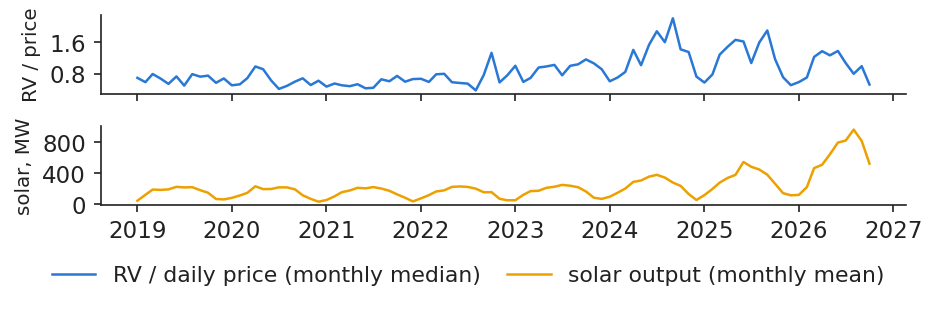
Top: monthly median of intraday variation divided by the daily price; bottom: monthly mean solar generation in Romania in megawatts (MW).
Source: energy-charts.info (Fraunhofer ISE); OPCOM prices; ENTSO-E solar generation (Transelectrica data for Romania). Data: hourly prices, monthly values, 2019-01-01 to 2026-10-31.
where \(b_0\) is a constant, \(b_D\), \(b_W\) and \(b_M\) the weights of yesterday, of the last 7 days and of the last 30 days, and \(e_d\) the error. The model is estimated by ordinary least squares (OLS). Because it is fitted in logs, the forecast in EUR/MWh is \(\exp(\widehat{\ln\text{RV}}_d+s^2/2)\), where \(s^2\) is the residual variance; the term \(s^2/2\) corrects the bias of taking the exponential of a mean.
Estimated on the data before the test year, the weights are \(\hat b_D\) = 0.40, \(\hat b_W\) = 0.36 and \(\hat b_M\) = 0.22, all with \(t\)-statistics above 6, and \(R^2\) = 0.82. Yesterday matters most, but last week and last month together carry more weight than yesterday. In the test year the mean absolute error (MAE) of HAR is 35.6 EUR/MWh, against 39.1 for the naive forecast that tomorrow equals yesterday, 9.1% less.
In practice: A battery operator schedules maintenance on days with low forecast variation.
HAR forecasts follow intraday variation, not its isolated spikes
The chart shows, over the test year from 1 November 2025 to 31 October 2026, the realised intraday variation of each day and the HAR forecast made the day before. The model is re-estimated every day on the data available on \(d-1\), so the forecast uses no future information. Its mean absolute error is 35.6 EUR/MWh.
The forecast follows the slow movements of intraday variation well, the seasonal rise in spring and summer and the calmer winter weeks, but it cannot foresee the isolated spikes. A forecast built from averages of the past is smooth by construction.
In practice: Use the forecast for planning, and keep reserves for the spikes it cannot see.
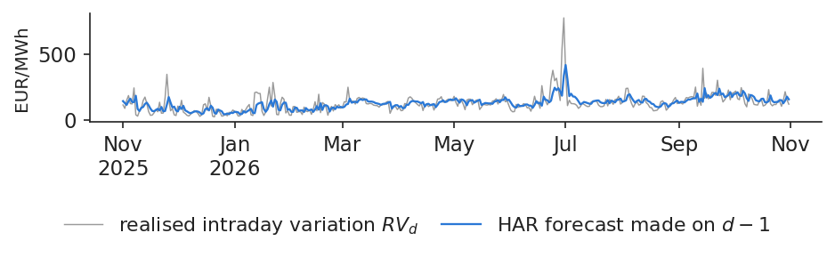
Realised intraday variation \(\text{RV}_d\) in EUR/MWh over the test year (grey) and the HAR forecast made on day \(d-1\) (coloured line).
Source: energy-charts.info (Fraunhofer ISE); OPCOM day-ahead prices for Romania, via ENTSO-E. Data: test year 2025-11-01 to 2026-10-31; HAR re-estimated daily.
Intraday variation of hourly prices is a separate risk from daily volatility, driven largely by solar generation. It has a long memory, and a HAR regression forecasts it better than yesterday's value, though not its isolated spikes.
Forecasting and evaluating volatility
A volatility model is useful only if it forecasts well on days it has not seen. This section explains how to judge forecasts of something that is never observed, compares five models over a test year with a significance test and shows how volatility forecasts behave several weeks ahead.
A volatility forecast is judged against a noisy proxy
True volatility is never observed. We compare the forecast with a noisy proxy, the squared shock, using a loss function that still ranks models correctly. Two losses are common, the quasi-likelihood loss (QLIKE) and the mean squared error (MSE):
where \(\varepsilon_t\) is the out-of-sample shock of day \(t\) and \(\hat\sigma_t^2\) the variance forecast made on \(t-1\). Both losses rank models correctly on average even with a noisy proxy (Patton, 2011), but MSE is dominated by a few extreme days, while QLIKE penalises errors in relative terms. Two models are compared with the Diebold–Mariano (DM) test on their daily loss differences.
An example shows the difference. Suppose the true \(\sigma\) is 20. A forecast of 10 has QLIKE = 1.61; a forecast of 40 has QLIKE = 0.64. Underestimating risk costs 2.5 times more than overestimating it, which is what a risk manager wants; MSE says the opposite, because it squares the large numbers.
The design of the test: the test year runs from 1 November 2025 to 31 October 2026, and five models are re-estimated every day on data up to \(t-1\) (Hansen & Lunde, 2005).
In practice: Ask your risk vendor for QLIKE on your own days, out of sample.
GARCH-type forecasts beat the 30-day history, significantly in EUR
The table compares the one-day-ahead variance forecasts of five models over the 365 days of the test year: the 30-day historical variance, an exponentially weighted moving average (EWMA) as in RiskMetrics (1996), and the three Student-t GARCH models.
One-day-ahead variance
QLIKE, %
\(p\) vs 30-day
QLIKE, EUR
\(p\) vs 30-day
30-day historical variance
1.523
–
1.428
–
EWMA
1.499
0.082
1.398
0.026
GARCH(1,1)-t
1.459
0.170
1.378
0.040
GJR(1,1)-t
1.445
0.145
1.357
0.032
EGARCH(1,1)-t
1.452
0.120
1.349
0.027
A lower QLIKE is better. The \(p\)-values come from a one-sided DM test against the 30-day history, with a Newey–West standard error using 7 lags (Diebold & Mariano, 1995). The best model is GJR-t in percent, with a loss 5.1% below the 30-day history, and EGARCH-t in EUR/MWh, 5.5% below.
At the 5% level, in EUR/MWh all GARCH-type models and the EWMA beat the history significantly; in percent none does. The asymmetric models are not significantly better than plain GARCH-t (\(p\) = 0.08). The gains are modest, a few percent of the loss, but they are systematic.
In practice: Use GARCH-t as the default: asymmetric models add little out of sample.
GARCH reacts at once; the 30-day history lags, then forgets abruptly
The chart shows why GARCH wins. It plots, over the test year, the absolute shock of each day in EUR/MWh with the GARCH-t forecast and the 30-day historical forecast, both made the day before. The largest shock of the test year was +124 EUR/MWh on 22 January 2026. The next day the GARCH \(\hat\sigma\) jumped from 25 to 47 EUR/MWh, while the historical forecast rose only to 33, because one day weighs one thirtieth in its window.
The history also forgets abruptly. Thirty days later the shock leaves the window, and the historical forecast drops from 32 to 23 EUR/MWh overnight, with no new information on that day. GARCH, instead, lets the shock fade gradually, at the rate \(\alpha+\beta\).
In practice: A limit that jumps 30 days after a shock, with no news, is a warning sign of a historical-window model.
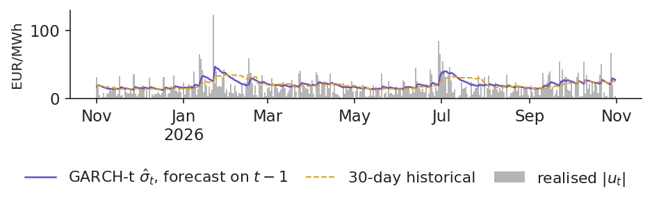
Absolute daily shock \(|u_t|\) in EUR/MWh over the test year (grey bars), with the GARCH-t forecast \(\hat\sigma_t\) made on \(t-1\) and the 30-day historical forecast (dashed).
Source: energy-charts.info (OPCOM, via ENTSO-E); own estimates. Data: test year 2025-11-01 to 2026-10-31; models re-estimated daily.
High volatility is expected to fall and low volatility to rise, so the usual rule \(\sigma\sqrt{h}\) misstates the risk over \(h\) days. The GARCH forecast for \(h\) days ahead is
where \(T\) is the forecast day, \(\hat\sigma^2_{T+1}\) the variance forecast for the next day and \(\bar\sigma^2\) the long-run variance of (3.7). For returns without autocorrelation, such as oil or carbon but not power, the variance of the sum over \(h\) days is the sum of the daily forecasts:
where \(\Var_T\) is the variance given the data up to \(T\) and \(r_{T+k}\) the return of day \(T+k\). A 90% band is \(\pm1.645\) times the square root of this variance.
Brent in 2026 illustrates both directions. On 9 April 2026, after the oil shock of the spring, \(\hat\sigma_{T+1}\) was 93% a year against a long-run level of 39%. The 20-day band from GARCH was ±38.5%, while \(\sigma\sqrt{20}\) gave ±43.1%, 12% too wide, because it ignored the expected calming. On 30 October 2026, with markets calm again, \(\hat\sigma_{T+1}\) was 32%, below the long-run 40%, and now \(\sigma\sqrt{20}\) was too narrow.
In practice: An industrial buyer budgeting next month's fuel should add the GARCH forecasts, not scale today's \(\sigma\).
Section summary
Volatility forecasts are compared with QLIKE and the DM test on days the model has not seen. GARCH-type models beat the 30-day history, significantly in EUR/MWh, and over several weeks the forecast reverts to the long-run level, so \(\sigma\sqrt{h}\) is wrong in both directions.
Case study: Romanian power in 2026
The case study applies the tools of the lecture to the question every Romanian energy company asked in autumn 2026: is the rise in prices a new crisis like 2022? It looks at prices and volatility in 2026, tests the one-day GARCH band over the test year, sets limits for November 2026 and replicates a study of energy shares and oil.
Case study: 2026 is a level shock, not (yet) a new 2022
Prices rose sharply in 2026. The monthly mean of the Romanian base price went from 150 EUR/MWh in January to 239 in October. Brent rose from 69 USD per barrel in February to 100 in March and 108 in October, and TTF gas from 32 to 87 EUR/MWh between February and October.
Volatility tells a more nuanced story. In percent nothing changed: the mean monthly \(\hat\sigma\) was 17.4% in 2026, 17.4% in 2022 and 16.6% in 2019. In EUR/MWh volatility doubled from 2019, from 10.9 to 21.8, but its peak month in 2026, 34.7 in January, stays far below the peak of 2022, 65.1 in September 2022. The turbulent regime covered 33% of the days of 2026 against 86% in 2022, and its probability was 0.47 on 31 October 2026. For Brent, GARCH volatility reached 100% annualised on 9 April 2026, against 30% on average in 2025.
The verdict: 2026 is a shock to the price level, with a turbulent regime about half of the time since July, but not (yet) a 2022.
In practice: A supplier renewing contracts in November 2026 should price risk on the higher level, not on a new volatility regime.
Case study: the one-day GARCH-t band held over the test year
A risk desk turns the volatility forecast into a band: the forecast price plus or minus the Student-t quantile times \(\hat\sigma_t\), all set on \(t-1\). For a 90% band, about one day in ten should fall outside. The chart shows the band and the actual price over the test year.
The band held. 38 of the 365 days fell outside, 10.4%, against 10% expected. The breaches were spread evenly over the year: 9.4% from November to April and 11.4% from May to October, despite the price rise. The band widened with the price level: its mean half-width was 33 EUR/MWh in the first half of the test year and 36 in September–October.
In practice: A supplier can set its daily purchase limit from this band; the formal tests of such bands come in Lecture 4.
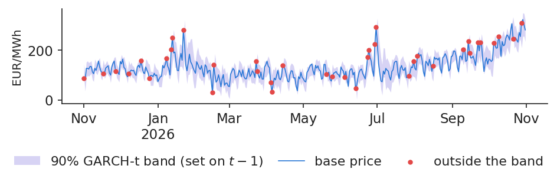
Daily base price of Romania over the test year, the 90% GARCH-t band set on \(t-1\) (shaded) and the days outside the band (dots).
Source: energy-charts.info (OPCOM, via ENTSO-E); own estimates. Data: test year 2025-11-01 to 2026-10-31.
The chart turns the multi-step forecast of (3.18) into limits. On the left, the GARCH-t forecast of the daily \(\sigma\) of the Romanian price for the days of November 2026, made with data up to 31 October 2026, and its long-run level. On 31 October the forecast was \(\hat\sigma\) = 26.0 EUR/MWh, close to the long-run 27.6, so the forecast term structure is almost flat. A one-day 90% limit is about ±43 EUR/MWh for each day of November.
On the right, the 90% band for Brent over a horizon of \(h\) trading days, computed on 9 April 2026 at the peak of the oil shock: the GARCH band, which sums the daily forecasts as in (3.19), grows more slowly than today's \(\sigma\sqrt{h}\), because volatility was expected to fall back to its long-run level.
In practice: Set limits from the forecast term structure, not from today's volatility.
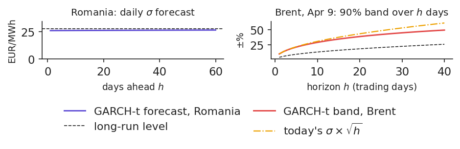
Left: GARCH-t forecast of the daily \(\sigma\) of the Romanian price by days ahead, with the long-run level (dashed); right: 90% band for Brent over \(h\) trading days on 9 April 2026, GARCH-t against today's \(\sigma\times\sqrt{h}\).
Source: energy-charts.info (OPCOM, via ENTSO-E); Yahoo Finance (Brent BZ=F, SparkChange EUA ETC); EODHD (BVB shares). Data: GARCH(1,1)-t forecasts made with data up to 2026-10-31.
Case study C3 starts from a paper of our group, Grecu, Cramer, Pele & Lessmann (2025). The paper uses the stock indices of the 27 European Union countries and Brent and TTF futures over 2010–2023. It estimates the volatility of each series with a GARCH model, then a dynamic conditional correlation (DCC) between each index and the energy prices for every day, and finally a Markov model for regimes of that correlation. It finds that the correlation with oil is mostly between 0 and 0.4, that Central and Eastern Europe (CEE) is the least correlated region and that the correlation regimes persist with probabilities above 98%.
Our replication applies the same method to three Romanian energy shares, OMV Petrom, Romgaz (SNG) and Nuclearelectrica (SNN), against Brent over 2,860 days. The DCC parameters are \(a\) = 0.021 and \(b\) = 0.950: the correlation moves slowly and is very persistent. The mean correlation is 0.13, with a maximum of 0.54 in 2020 and a minimum of −0.32 in 2022, the same calendar as in the paper. Hedging the basket with Brent out of sample changes its variance by −1.7% with a dynamic hedge and −6.9% with a static one; here a negative change means more risk, so the hedge does not help. The C3 numbers are computed by the C3 case notebook on our data; the paper's own results are in the case brief.
In practice: The risk of Romanian energy shares is regulatory and local: a Brent hedge does not reduce it.
Section summary
In 2026 the Romanian power price rose to a higher level without entering a 2022-style volatility regime. The one-day GARCH-t band held over the test year, November limits follow the forecast term structure, and Romanian energy shares cannot be hedged with oil.
Wrap-up
The wrap-up checks the main ideas with five short questions, summarises the lecture and points to the research of our group and to further reading.
For Brent, GARCH(1,1)-t gives \(\hat\alpha+\hat\beta\) = 0.973. After a shock, how long until half of the extra variance is gone? Answer: by (3.10), \(h_{1/2}=\ln 0.5/\ln 0.973\) = 25.6 trading days, about 5 weeks: limits stay wider for weeks, not days.
In 2022 the percent volatility of the Romanian price was the same as in 2019. Did the risk of a supplier's open position of 10 MW change? Answer: yes. The position gains or loses in EUR, and the EUR/MWh volatility of the shocks rose 4.1 times, with the price level.
The PZU price rises by 35% from Sunday to Monday. Should the risk desk widen the limits? Answer: no. On average Monday is +38% above Sunday; the calendar is forecast by the mean equation (3.4), and only the shock \(\varepsilon_t\), here almost zero, enters GARCH.
A vendor's volatility model has the lowest mean squared error on your test year, thanks to three extreme days. What do you ask for? Answer: QLIKE on the same days and a DM test against GARCH-t and the 30-day history. On our test year the best QLIKE in EUR/MWh belongs to EGARCH-t, which is not significantly better than GARCH-t.
Yesterday the price moved by 61 EUR/MWh. For a buyer, is tomorrow riskier if it was a rise or a fall? Answer: after a rise. The GJR model in EUR/MWh gives \(\sigma\) = 37.6 after a rise and 30.6 after a fall, the inverse leverage effect.
Measure first: remove the weekly calendar before measuring volatility, and choose the unit with care. In percent the energy crisis was not more volatile than 2019; in EUR/MWh it was 4.1 times more, and that is the volatility that collateral and margin calls follow.
Then model and forecast: GARCH with Student-t shocks is the default model. Oil shocks halve in about 5 weeks, percent shocks in Romanian power in a few days; asymmetric models add little out of sample; a regime model dates the crisis; and HAR forecasts intraday variation. The next lecture turns volatility into risk measures for energy companies (Lecture 4).
Several papers of our group, at the Bucharest University of Economic Studies and the Romanian Academy, Institute for Economic Forecasting, use the tools of this lecture. The findings below are as stated in the papers; the numbers on the other slides come from our own data.
Energy prices and EU stock markets (Grecu, Cramer, Pele & Lessmann, 2025). The paper estimates GARCH volatility, daily DCC correlations and Markov regimes for 27 national stock indices against oil and gas over 2010–2023. It finds that European markets follow oil more than gas, with persistent correlation regimes; it is the basis of case study C3.
Entropy and market risk (Pele, Lazar & Dufour, 2017). The paper measures the entropy of intraday euro–yen returns and relates it to intraday value at risk (VaR) and expected shortfall (ES). It finds a negative relation between entropy and intraday VaR and ES, and then uses intraday entropy to forecast the daily VaR.
High-frequency entropy for daily risk (Pele & Mazurencu-Marinescu-Pele, 2019). The paper uses the entropy of intraday Bitcoin returns to forecast the daily VaR and compares it with classical GARCH models. The entropy-based VaR forecast performs best in the backtests, showing that intraday data carry information on daily risk.
Energy Financial Risk Meter (Toma, Dima, Grecu, Pele & Lessmann, 2026). The paper builds a systemic-risk indicator for the EU energy sector, a preview of Lecture 4.
AIDA 2026: geopolitical crises turn the energy link of EU stocks negative
At the AIDA conference of the Bucharest University of Economic Studies, on 3 June 2026, Alexandru-Adrian Cramer presented the work of Grecu, Cramer, Pele & Lessmann on energy prices and European stock markets, the paper behind case study C3, with the data extended to 2026. The work takes the main stock index of each European Union country, also grouped into regional indices and by the level of industrial production, and the generic Brent and Dutch TTF futures, from 2010 to 2026. It first models the volatility of each series with GARCH, then estimates a daily dynamic conditional correlation (DCC) between each index and oil or gas, the model of case study C3; a Markov-switching model separates regimes of high and low correlation, and a structural vector autoregression on monthly data traces the response of the indices to an oil or gas shock.
The correlation of stock indices with oil is generally positive, in most cases between 0 and 0.4, and the correlation with gas is generally lower than with oil. Oil is most strongly correlated with the indices of Southern and Western Europe, gas with those of Northern and Western Europe, and the most industrialised countries follow oil more closely. Geopolitical crises turn the correlation negative: after the annexation of Crimea in 2014 (gas, mainly in Northern and Western Europe), after the Russian invasion of Ukraine in 2022 (for gas, most strongly in Central and Eastern Europe) and during the Middle East tensions of 2026. After an oil or gas shock, the indices of the most industrialised countries are affected more in the first months, and the effect fades over the medium term. The findings are as stated by the authors: slides of the talk; paper: doi:10.1016/j.najef.2025.102420.
In practice: Whoever hedges EU shares with oil or gas futures must expect the correlation to change sign in a geopolitical crisis.
AIDA 2026: spillovers of energy tokens are mostly short-run
At the same AIDA conference, on 4 June 2026, Souhir Ben Amor and Matúš Horváth presented their work on the transitory and persistent spillovers between energy tokens and other markets. Energy tokens are digital assets on a blockchain that represent renewable energy, for example one token for one kilowatt-hour. The work studies energy tokens (Power Ledger, SunContract, Energy Web), cryptocurrencies, clean-energy stocks and funds, commodities (oil, gas, copper, gold, European Union carbon allowances) and sustainable-investment funds and green bonds, from 7 December 2020 to 31 January 2026. A time-varying vector autoregression measures how much of the forecast variance of each asset comes from shocks to the others (connectedness), and splits this into a short-run, transitory part and a long-run, persistent part.
Spillovers are strongly time-varying and mainly short-run: the short-run band is about 60% of total connectedness and the long-run band about 5%. The crises of the sample, the cryptocurrency turmoil of 2021 and the energy crisis of 2022, amplify short-run shocks, while the long-run structure stays flat. Power Ledger and SunContract are the most central transmitters of shocks in the short run; Energy Web becomes relevant mainly in stress episodes. The value for diversification depends on the token: in the minimum-variance portfolio the Sharpe ratio is 0.127 without tokens and 0.143 with SunContract, the only token with a consistently positive Sharpe-ratio gain; Power Ledger is neutral and Energy Web, a persistent net receiver of shocks, lowers the long-run Sharpe ratio. The findings are as stated by the authors: slides of the talk.
In practice: Shocks between energy tokens and other markets pass within days; judge the diversification value of each token separately.
R. F. Engle, GARCH 101 (2001): the clearest short introduction, by the Nobel laureate who invented ARCH, doi:10.1257/jep.15.4.157.
R. Weron, Modeling and Forecasting Electricity Loads and Prices (Wiley, 2006): stylised facts and volatility of power prices, doi:10.1002/9781118673362.
The arch Python package (K. Sheppard), used for every model of this lecture: arch.readthedocs.io.
Case study C3: the DCC model and the Brent hedge for Romanian energy shares, step by step.
Experiment yourself: the notebook of the lecture reproduces every chart and number, L3_notebook.ipynb.
Appendix
The appendix gives the technical details behind the main text: the Student-t likelihood of GARCH, the derivation of the multi-step forecast and of the half-life, the full table of the six models, the Hamilton filter and the reason for using QLIKE.
where \(\theta=(\omega,\alpha,\beta,\nu)\) collects the parameters, \(\Gamma\) is the gamma function, \(\sigma_t^2\) follows (3.6) and \(\varepsilon_t\) is the shock. The factor \(\nu-2\) rescales the Student variable to variance 1, so that \(\sigma_t^2\) remains the conditional variance. The likelihood is maximised numerically under \(\omega>0\), \(\alpha,\beta\ge0\), \(\alpha+\beta<1\) and \(\nu>2\), with robust standard errors, using the Python package arch. In the normal case,
Write \(\varepsilon_t^2=\sigma_t^2+v_t\), where \(v_t\) is a surprise with \(\E_{t-1}[v_t]=0\). Substituting in (3.6) gives \(\sigma^2_{t+1}=\omega+(\alpha+\beta)\sigma_t^2+\alpha v_t\).
Take expectations at \(T\): \(\E_T[\sigma^2_{T+h}]=\omega+(\alpha+\beta)\E_T[\sigma^2_{T+h-1}]\) for \(h\ge2\). Subtracting the long-run identity \(\bar\sigma^2=\omega+(\alpha+\beta)\bar\sigma^2\) shows that the deviation from \(\bar\sigma^2\) is multiplied by \(\alpha+\beta\) every day.
Hence \(\E_T[\sigma^2_{T+h}]-\bar\sigma^2=(\alpha+\beta)^{h-1}(\sigma^2_{T+1}-\bar\sigma^2)\). Half of the deviation is left when \((\alpha+\beta)^{h}=1/2\), so \(h_{1/2}=\ln(1/2)/\ln(\alpha+\beta)\), which is (3.10).
For the asymmetric models the persistence is defined differently. In GJR with a symmetric \(z_t\), the term \(\gamma I_{t-1}\) is active half of the time, because \(\Pr(\varepsilon<0)=1/2\), so the persistence is \(\alpha+\gamma/2+\beta\). In EGARCH, \(\ln\sigma_t^2\) follows an autoregression with coefficient \(\beta\), so the persistence is \(\beta\).
The table gives the log-likelihood \(\hat\ell\) (log-L), the Akaike information criterion \(\text{AIC}=2k-2\hat\ell\) and the Bayesian information criterion \(\text{BIC}=k\ln T-2\hat\ell\), where \(k\) is the number of parameters, for the six models in both units. All are estimated on 2,853 days, from 1 January 2019 to 31 October 2026.
Model
log-L, %
AIC, %
BIC, %
log-L, EUR
AIC, EUR
BIC, EUR
GARCH, normal
−12,360.3
24,726.6
24,744.5
−12,274.7
24,555.4
24,573.2
GARCH, Student
−12,094.5
24,197.0
24,220.8
−12,209.4
24,426.8
24,450.7
GJR, normal
−12,329.4
24,666.8
24,690.7
−12,246.6
24,501.3
24,525.1
GJR, Student
−12,087.2
24,184.3
24,214.1
−12,185.9
24,381.9
24,411.7
EGARCH, normal
−12,329.8
24,667.6
24,691.4
−12,243.1
24,494.2
24,518.0
EGARCH, Student
−12,089.7
24,189.4
24,219.2
−12,182.1
24,374.1
24,403.9
AIC and BIC give the same ranking: GJR-t is best in percent and EGARCH-t in EUR/MWh. For GJR-t the asymmetry \(\hat\gamma\) and the degrees of freedom \(\hat\nu\) are 0.225 and 4.41 in percent, and −0.127 and 6.50 in EUR/MWh.
Appendix D: the Hamilton filter and the robustness of QLIKE
where \(\mathcal F_{t-1}\) is the information available up to day \(t-1\) and \(p_{ij}\) the transition probabilities. In the update step, each predicted probability is multiplied by the normal density of \(u_t\) in regime \(j\) and the results are normalised to sum to one; the sum over \(t\) of the logarithms of the normalising constants is the log-likelihood. The smoothed probabilities shown in the chart use all the data, while the filtered ones use only the past; a real-time warning must use the filtered probabilities.
Why QLIKE? If \(\E_{t-1}[\varepsilon_t^2]=\sigma_t^2\), the expected QLIKE is minimised only at \(\hat\sigma_t^2=\sigma_t^2\), however noisy \(\varepsilon_t^2\) is as a proxy. The same holds for MSE, while losses such as \(|\varepsilon_t|-\hat\sigma_t\) or errors in logarithms can rank models wrongly (Patton, 2011). The DM statistic is the mean daily loss difference divided by its Newey–West standard error with 7 lags; it is asymptotically normal.
Abbreviations
AIC
Akaike information criterion
ARCH
autoregressive conditional heteroskedasticity
ARCH-LM
Lagrange multiplier test for ARCH effects
BIC
Bayesian (Schwarz) information criterion
BVB
Bucharest Stock Exchange
CEE
Central and Eastern Europe
CET
Central European Time
DCC
dynamic conditional correlation
DE-LU
Germany–Luxembourg bidding zone
DM
Diebold–Mariano test
EGARCH
exponential GARCH (Nelson)
ENTSO-E
European Network of Transmission System Operators for Electricity
Andersen, T. G. & Bollerslev, T. (1998). Answering the skeptics: Yes, standard volatility models do provide accurate forecasts. International Economic Review, 39(4), 885–905. doi:10.2307/2527343
Ben Amor, S. & Horváth, M. (2026). Transitory and persistent cross-market spillovers of energy tokens. AIDA Conference, Bucharest University of Economic Studies, 4 June 2026. github.com/danpele/EMQA/resources/aida2026
Bollerslev, T. (1986). Generalized autoregressive conditional heteroskedasticity. Journal of Econometrics, 31(3), 307–327. doi:10.1016/0304-4076(86)90063-1
Bollerslev, T. (1987). A conditionally heteroskedastic time series model for speculative prices and rates of return. Review of Economics and Statistics, 69(3), 542–547. doi:10.2307/1925546
Corsi, F. (2009). A simple approximate long-memory model of realized volatility. Journal of Financial Econometrics, 7(2), 174–196. doi:10.1093/jjfinec/nbp001
Cramer, A.-A. (2026). The link between energy prices and stock markets in European Union countries (with R.-A. Grecu, D. T. Pele and S. Lessmann). AIDA Conference, Bucharest University of Economic Studies, 3 June 2026. github.com/danpele/EMQA/resources/aida2026
Diebold, F. X. & Mariano, R. S. (1995). Comparing predictive accuracy. Journal of Business & Economic Statistics, 13(3), 253–263. doi:10.1080/07350015.1995.10524599
Engle, R. F. (1982). Autoregressive conditional heteroscedasticity with estimates of the variance of United Kingdom inflation. Econometrica, 50(4), 987–1007. doi:10.2307/1912773
Engle, R. F. (2001). GARCH 101: The use of ARCH/GARCH models in applied econometrics. Journal of Economic Perspectives, 15(4), 157–168. doi:10.1257/jep.15.4.157
Engle, R. F. & Ng, V. K. (1993). Measuring and testing the impact of news on volatility. Journal of Finance, 48(5), 1749–1778. doi:10.1111/j.1540-6261.1993.tb05127.x
Glosten, L. R., Jagannathan, R. & Runkle, D. E. (1993). On the relation between the expected value and the volatility of the nominal excess return on stocks. Journal of Finance, 48(5), 1779–1801. doi:10.1111/j.1540-6261.1993.tb05128.x
Grecu, R. A., Cramer, A. A., Pele, D. T. & Lessmann, S. (2025). The link between energy prices and stock markets in European Union countries. North American Journal of Economics and Finance, 78, 102420. doi:10.1016/j.najef.2025.102420
Hamilton, J. D. (1989). A new approach to the economic analysis of nonstationary time series and the business cycle. Econometrica, 57(2), 357–384. doi:10.2307/1912559
Hansen, P. R. & Lunde, A. (2005). A forecast comparison of volatility models: Does anything beat a GARCH(1,1)? Journal of Applied Econometrics, 20(7), 873–889. doi:10.1002/jae.800
Knittel, C. R. & Roberts, M. R. (2005). An empirical examination of restructured electricity prices. Energy Economics, 27(5), 791–817. doi:10.1016/j.eneco.2004.11.005
Lamoureux, C. G. & Lastrapes, W. D. (1990). Persistence in variance, structural change, and the GARCH model. Journal of Business & Economic Statistics, 8(2), 225–234. doi:10.1080/07350015.1990.10509794
Ljung, G. M. & Box, G. E. P. (1978). On a measure of lack of fit in time series models. Biometrika, 65(2), 297–303. doi:10.1093/biomet/65.2.297
Nelson, D. B. (1991). Conditional heteroskedasticity in asset returns: A new approach. Econometrica, 59(2), 347–370. doi:10.2307/2938260
Patton, A. J. (2011). Volatility forecast comparison using imperfect volatility proxies. Journal of Econometrics, 160(1), 246–256. doi:10.1016/j.jeconom.2010.03.034
Pele, D. T., Lazar, E. & Dufour, A. (2017). Information entropy and measures of market risk. Entropy, 19(5), 226. doi:10.3390/e19050226
Pele, D. T. & Mazurencu-Marinescu-Pele, M. (2019). Using high-frequency entropy to forecast Bitcoin's daily value at risk. Entropy, 21(2), 102. doi:10.3390/e21020102
RiskMetrics (1996). RiskMetrics — Technical Document, 4th ed. J. P. Morgan / Reuters, New York. msci.com
Toma, F.-M., Dima, D.-M., Grecu, R., Pele, D. T. & Lessmann, S. (2026). Energy Financial Risk Meter: Systemic risk in the EU energy sector. SSRN Working Paper 6985301. doi:10.2139/ssrn.6985301
Uniejewski, B., Weron, R. & Ziel, F. (2018). Variance stabilizing transformations for electricity spot price forecasting. IEEE Transactions on Power Systems, 33(2), 2219–2229. doi:10.1109/TPWRS.2017.2734563
Weron, R. (2006). Modeling and Forecasting Electricity Loads and Prices: A Statistical Approach. Wiley, Chichester. doi:10.1002/9781118673362
Weron, R. (2014). Electricity price forecasting: A review of the state-of-the-art with a look into the future. International Journal of Forecasting, 30(4), 1030–1081. doi:10.1016/j.ijforecast.2014.08.008
Text written for the web version of the lecture; numbers, charts and sources come from the slides and their Quantlets.